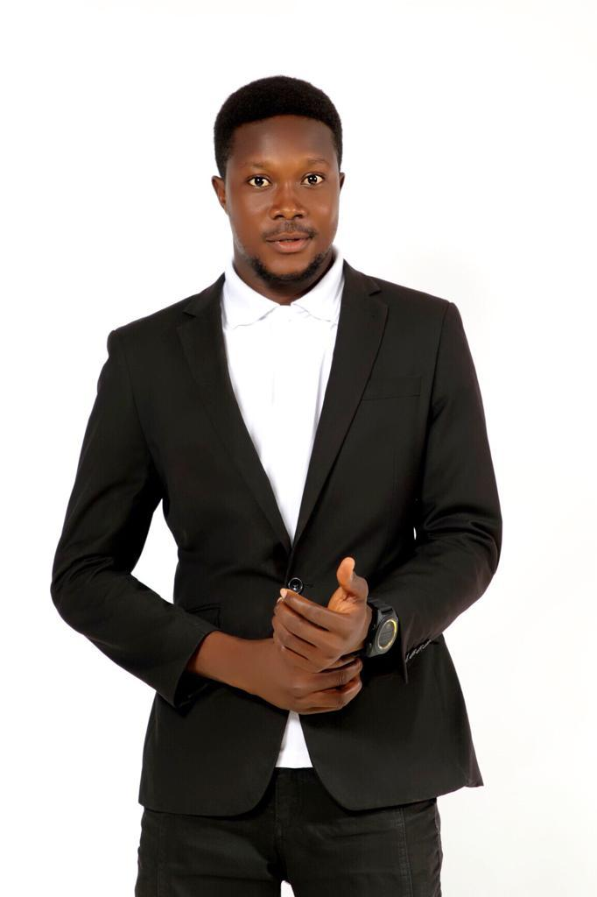
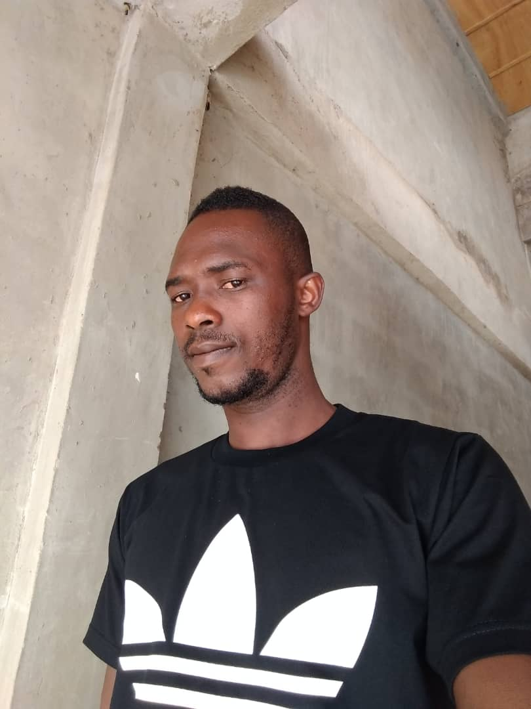

This association was formed by the students who completed 07/08
Members
Ababio Daniel
Tetteh Enoch

Atipo Tetteh

Nyardro John

Morris Asiedu George
Antwi Ernest
Seth Agyekum
Adeti Noah
Martin Portorohy
Kwabena Tetteh
Kulodzi Raymond

Adom Grace Dankwa

Helina Nartey Asiedu Adams
Adobea Gloria
Asor Beatrice

Agbevem Edith
Carterine

Sarbah Vida
Fatima Abu Bakr
Narteh Rebecca
Torkar Juliana
Yaw Teye
Precious Teachers
1. Mr. Harry Aguzey

2. Mr. Munyo Hope
3. Mad. Rhoda Asare
4. Mad. Patricia
5. Sir Daniel a.k.a Prof Dan
6. Mr. Mensah
7. Mr. Sledge. a.k.a SOKODI
8. MR. Abrokwa
ADMINISTRATION
PRESIDENT
Mr. Harry Aguzey
Now lives in China
GUIDANCE AND COUNCIL COORDINATOR
Mr Munyo Hope
Teaching at Adjena/Adumasa-Gh